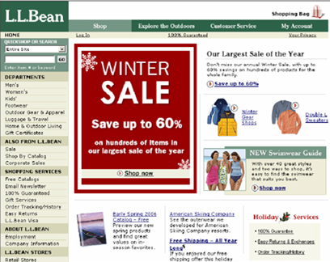
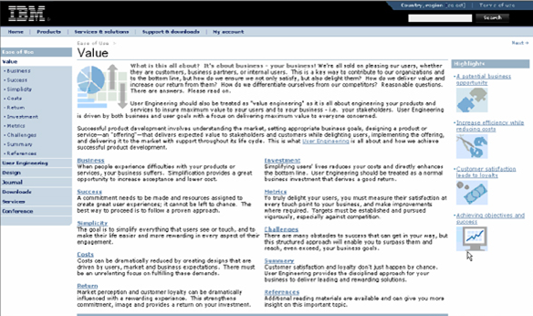

Web sites and Web applications require users to select from navigational options to access subsequent content pages. An important question relates to where the first navigational choices should be located on the page. Is the navigation better placed at the top of the page, on the left or right panels? If three clicks (i.e., three navigational level selections) are required to get to the desired content, should they be grouped together at the top, left, right, or split between different locations (e.g., select from the top, with the next selection[s] from the left, top or right)?
Research
Kingsbury and Andre (2004) conducted a study to determine which Web-based three-level navigational selection pattern elicited the best human performance and highest user preference. They surveyed 69 Web sites and found that most of them favored a three-level navigational selection structure that was either:
The initial selection was made from the top followed by a selection from the left navigation panel and subsequent selections from the left navigation panel (TLL).
Left selection followed by subsequent left navigation selections (LLL).
Top – Left – Left Navigation Pattern
The L.L. Bean Web site demonstrates a top, left, and left (TLL) navigation structure. Let's say the user wants to shop for women's boots. The user would select Shop from the top navigation options, then Women's from the Departments on the left navigation panel and footwear from the left navigation panel.

Left – Left – Left Navigation Pattern
A Web site that requires the user to select from the left navigation panel and subsequent selections from the left navigation would be IBM's Ease of Use Web site. In this example of left, left and left, the user has entered IBM and found the Ease of Use Web site. The user is interested in the value of ease of use and any metrics that supports ease of use. To find the information, the user would select Value from the left navigator then Business and then Metrics, both subsequent left navigator choices.

The Research Study
Kingsbury and Andre conducted two studies. The first study evaluated eight different navigation structures. They asked 16 experienced participants to purchase items form a prototype shopping Web site. In each case, they used a different three-level selection hierarchy.
First Study
In general, navigation times were faster when:
- The initial selection was made from the left navigation panel.
- The second selection was also made from the left navigation panel.
- The navigation panel used for the first selection (either left or top) was split from the panel used for the second and third selections.
- User preferences were highest when:
- The initial selection was made in the left navigation panel.
- The first and second selections were both made from the left or top panel.
- The second and third selection, or first, second, and third selections were made from the same panel.
Results showed that the left-left-left (LLL) and left-top-top (LTT) navigational structures were the top performing and most preferred.
Second Study
Kingsbury and Andre's second study required 16 different participants to perform the same tasks. However, this time a right-hand navigation panel was added to the options. Previous research by Kalbach and Bosenick (2003) reported no significant differences when users navigated using either right or left navigation panels.
Results showed that navigation times were faster when users' first selection was from the left panel as compared to the first selection made from the top or right panel. In addition, navigation times were faster when users made all selections from the same navigation panel; users also preferred this option.
Performance and preference measures also showed that the right hand navigation option was a viable design option. As in the first study, results support the benefit of having the second and third selections from the same panel.
Conclusions
Kingsburg and Andre's research demonstrated that navigational selection limited to either the left or right panels resulted in the best human performance and strongest user preference. However, there appears to be a performance advantage when the first selection is made from the left navigation panel as compared to the right navigation panel. This difference may be explained by the reading pattern of the participants (i.e., English reading requires reading from left to right and top to bottom).
The three navigation structures eliciting slower performance and lower preference ratings were:
- Top – Top – Left (TTL)
- Top – Left – Top (TLT)
- Right – Top – Right (RTR)
References
Kalbach, J. and Bosenick. T. (2003). Web page layout: A comparison between left and right-justified navigation menus. Journal of Digital Information, 4(1).
Kingsburg, J.R. and Andre, A.D. (2004). A comparison of three-level web menus: Navigation structures. Proceedings of the Human Factors and Ergonomics Society Annual Meeting.